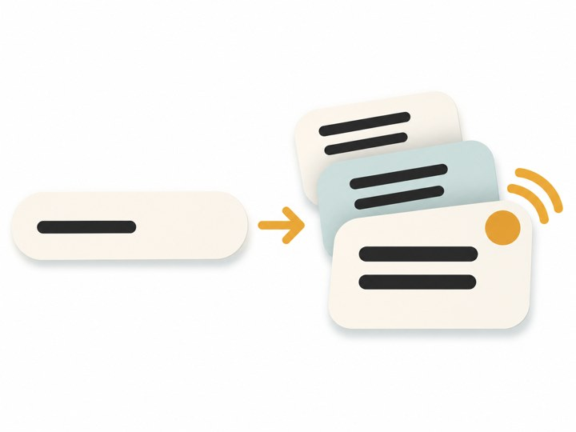

iPhone・iPad・Android の RSS リーダー
好きなサイトの新着が、
アカウントなしで届く。
サイトの URL を貼るだけで、ページからフィードを見つけます。新しい記事は端末が直にサイトへ取りに行き、本文だけの読みやすい表示で読めます。登録も、ほかのサービスもいりません。
App Store・Google Play で配信予定買い切りで全部の機能が使えます。アプリ内課金・サブスクリプション・広告はありません。

こんな困りごとのために
アカウントやサービスが面倒
とどきものは登録なしで使えます。フィードは端末がサイトから直に取りに行きます。iPhone と iPad の既読は iCloud でそろいます。
フィードの URL が分からない
サイトの URL を貼るだけで、ページからフィードを見つけます。Safari の共有からも足せます。OPML の読みこみもできます。
記事が読みにくい
本文だけを抜き出した表示で読めます。字の大きさ・行間・書体・暗い表示を選べ、端末の声で読み上げもできます。
更新されない理由が分からない
取れなかったフィードには、見つからない・形が違う・つながらない、の理由を出します。
記事が多すぎる
フォルダ・未読と既読・あとで読む・語のミュートで、読みたいものだけを並べます。
広告がじゃま
とどきものに広告はありません。買い切りで、あとから支払いを求めることもありません。
できること
| 足す | サイトの URL を貼る・Safari の共有から・OPML の読みこみ（RSS 2.0・Atom・RSS 1.0） |
|---|---|
| 読む | 本文だけの読みやすい表示・元のページ・字の大きさ・行間・書体・暗い表示・読み上げ |
| 整理 | フォルダ・未読と既読・あとで読む・語のミュート・フィードごとの新着の通知 |
| 更新 | 裏で取りに行く・引っぱって更新・取れなかった理由 |
| 端末 | iCloud で iPhone と iPad をそろえる・iPad と iPhone Duo では一覧と本文を左右に |
| データ | アカウントなし・通信はあなたが足したサイトだけ・解析と広告なし・OPML の書き出し |
使い方・プライバシーポリシー・利用規約もご覧ください。